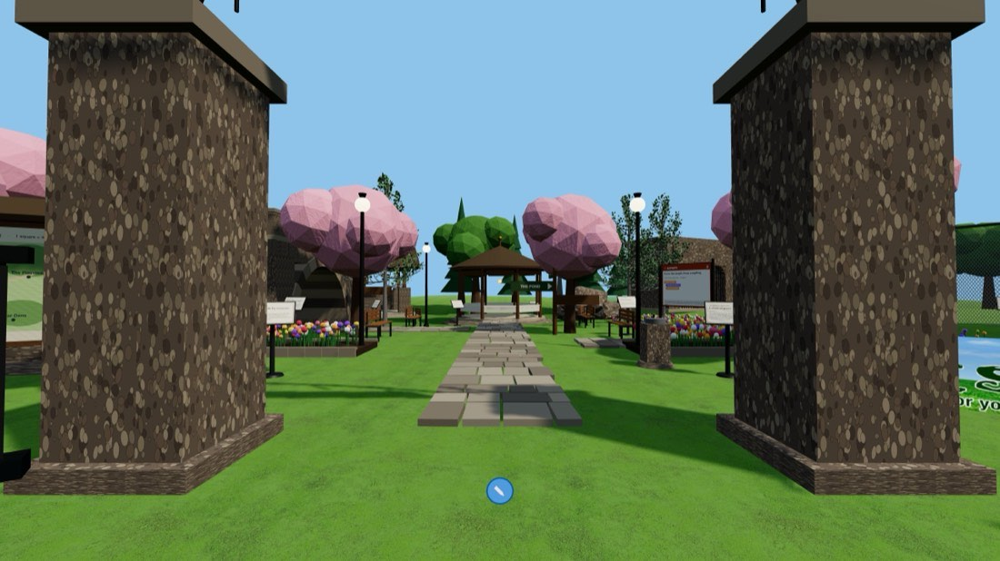
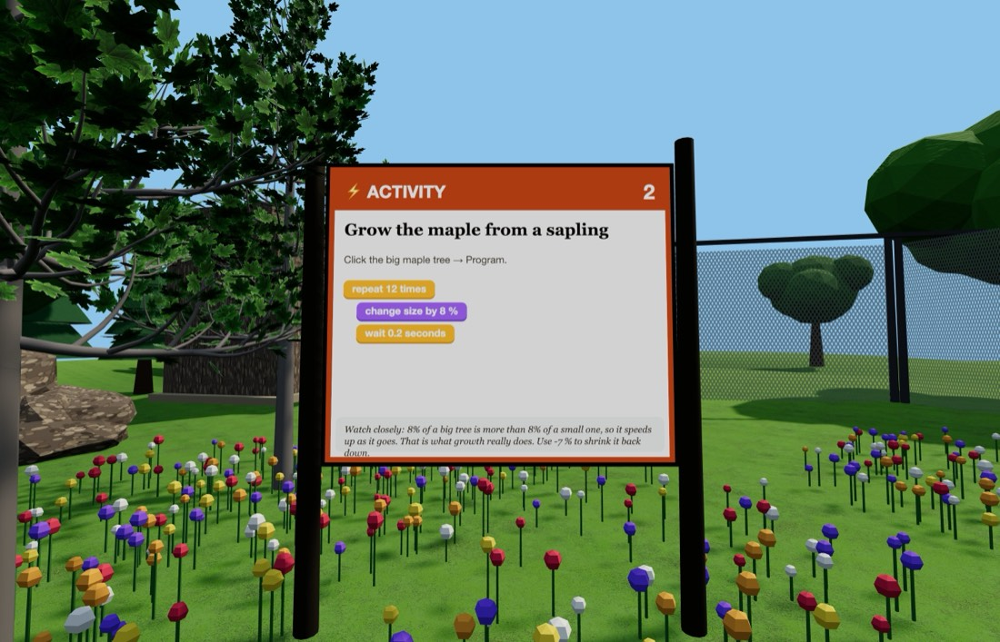

🌳 The Park
A whole city park — pond, bandstand, playground and a hundred-year-old design.
Getting there: ▶ Open The Park One click — nothing to download and no account. Or open Edusim yourself and tap ☰ Menu → Load World → The Park. You will be set down at the front gate. Look for the bright ⚡ ACTIVITY boards — there are two of them. Type it in: edusim3dweb.com/app/?world=1 Opening a world replaces whatever is currently in your copy — save first with ☰ Menu → Load World → Save World if you have something you want to keep.



Quick starts — do these first
Both of these are printed on boards inside the world too, so you can leave this card at home. Click the object, choose Program, drag the blocks together in this order, then press Save.
Send the geese out for a paddle
Click a goose → Program
- forever
- repeat 20 times
- move forward 0.3 feet
- repeat 20 times
- move forward -0.3 feet
💡 Out six feet, back six feet, over and over. Drop a wait 0.1 seconds inside each loop to slow them to a proper glide — geese are never in a hurry.
Grow the maple from a sapling
Click the big maple tree → Program
- repeat 12 times
- change size by 8 %
- wait 0.2 seconds
💡 8% of a big tree is more than 8% of a small one, so it speeds up as it goes — which is exactly what real growth does. Use -7 % to shrink it back.
Then try these three
-
Bench city
Click a bench and give it repeat 5 times → duplicate 6 ft away. You get a whole row. Now program one of the copies to spin and watch which ones copied the spin and which didn't.
- repeat 5 times
- duplicate 6 ft away
-
Sunset over the pond
Click one of the glowing light orbs and make it fade between two colours. Stand back at dusk distance and see what it does to the water.
- forever
- change color to orange
- wait 2 seconds
- change color to blue
- wait 2 seconds
-
Tallest tree in the park
Grow a conifer by 5% twenty times over. Before you run it, predict: is it now twice as tall, or more? (Get a calculator out — 1.05 multiplied by itself 20 times is about 2.65.)
- repeat 20 times
- change size by 5 %
- wait 0.1 seconds
Block colours
- Control — repeat, forever, wait, when an object says, duplicate
- Motion — move forward, move up, glide, rotate, go back to start
- Looks — say, change size, set size, set opacity, change colour
One rule that catches everybody: move forward and glide follow the way the object is pointing, so a rotate in front of them genuinely steers — four sides and four 90° turns bring something back exactly where it began. move up is the exception: up is up whichever way a thing is facing.